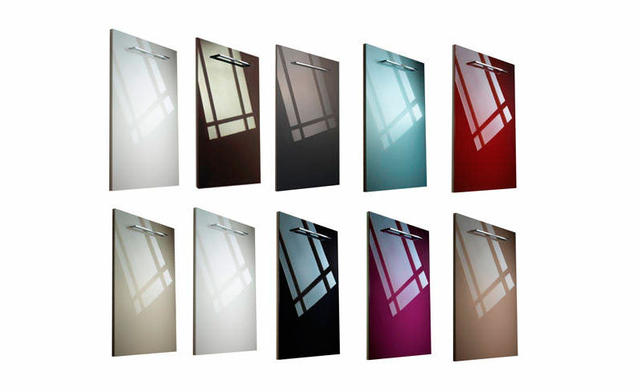

8 (8412) 39-57-47
г.Пенза, ул.Германа-Титова 5
Пленка ПВХ для мебели и дверей — это отличный вариант имитирования поверхности натурального дерева, камня или способ изобразить на фасадах мебели любой рисунок. Кроме того, такая пленка защищает деревянную поверхность от избыточной влаги, грязи и прочего негативного воздействия на дерево. Изготавливается она из поливинилхлорида путем пластификации подготовленного сырья на вальцево-каландровом станке.
За прошедшие годы в производстве мебели произошли разительные изменения. Если раньше вся мебель и дверь изготавливались из массива дерева или древесной плиты, покрытой бумагой, что доставляло массу неудобств своему владельцу, то теперь использование ПВХ-покрытий на дерево-клеевом основании существенно увеличило жизнь деревянных изделий.
Мебельные ПВХ-пленки проходят антибактериальную и противогрибковую обработку, что соответствует гигиеническим нормам. Такая пленка не имеет клеевого слоя. Ее наносят на вакуумном прессе, добиваясь максимального прилегания к деревянной поверхности. Методы нанесения могут производить его абсолютно на любую поверхность. Утилизируемые отходы наносят минимальный вред.
Основная функция ПВХ-покрытия, кроме декоративной, — защита древесной основы от губительной влажности окружающей среды. Для нанесения пленки на вакуумных станках и создания надежного сцепление элементов деревянное основание предварительно тщательно очищают и обезжиривают (на полотне не может быть даже малюсенькой песчинки). В вакуум-камере под действием высокой температуры и давления ПВХ-пленка становиться мягкой. Она принимает форму деревянного основания (абсолютно любой сложности) и плотно прилегает к нему. На выходе получается готовая красивая дверь или элемент мебельного фасада.
Из основных достоинств пленки ПВХ стоит отметить:
ПВХ-пленка надежно «сидит» на изделии, она не потеряет своего внешнего вида долгие годы, не поцарапается, не выцветет, не изменит своей формы. Пленка имеет очевидное преимущество перед деревом. Наличие однородного рисунка под шпон отбрасывает вопрос с подбором похожих дверей. Причем, изделия с облицовкой пленкой ПВХ просты в уходе. Для поддержания чистоты достаточно губки с мыльным раствором обычного моющего средства (стоит избегать средств с абразивом или растворителя). ПВХ-пленка не набухнет и не расслоится от воды. Конечно, не стоит забывать об экономической стороне вопроса. Изделия из дерева-плиты с ПВХ при своем привлекательном внешнем виде значительно дешевле подобных из натурального дерева.